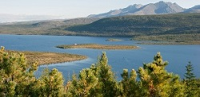

ПРОИСХОЖДЕНИЕ НАЗВАНИЯ
Тайга - «полоса диких труднопроходимых хвойных лесов умеренного пояса». В рус. словарях отмечается с середины XIX в. В литерат. яз. проникло из сибирских диал. Общепринятой этимол. не имеет. Одни полагают, что слово тайга происходит из алтайских языков. Ему родственны тюрк, taiγa «крутая горная скала»; тур. daγ «гора». Ср. татарск. Аюдаг «Медведь-гора». В соответствии с этой гипотезой у слова тайга знач. «лес» является вторичн. Ср. в «Опыте областного великорусского словаря» 1852 г. тайга «дикие лесистые пространства в горах». Другие считают слово тайга заимствованием из якутского яз., в котором тайга значит «непроходимый лес». (Этимологический словарь Цыганенко)
Есть ещё версия: от древнего "тай" - конец. Тогда "тайга" - конец чего-то (вот только не ясно - чего).
РЕКИ ТАЙГИ
Восточно-Сибирская тайга — экорегион тайги, находится на территории бассейнов двух крупнейших сибирских рек — Енисея и Лены. Восточная часть региона занимает бассейн реки Лена вплоть до Верхоянского хребта, с запада экорегион ограничен рекой Енисей. Это крупнейшее в мире пространство, занятое нетронутыми лесами, простирается на 20 градусов с востока на запад, от 52° с. ш. до полярного круга, максимальная протяжённость с севера на юг — 1600 км. Всемирный фонд дикой природы включает его в список двухсот важнейших для сохранения экосистем — Global 200. Здесь встречается большинство биологических видов, характерных для Сибири. Преобладают лиственничные леса. Характеризуется низкой распространённостью болот.

Автор: Bartosh Dmytro, Ukraine, Kiev. http://fotostudio.com.ua - собственная работа, CC BY 3.0, https://commons.wikimedia.org/w/index.php?curid=9761882
РАСПОЛОЖЕНИЕ ТАЙГИ
Тайга располагается в умеренной влажной географической зоне. Основой растительностью здесь являются хвойные деревья. Для тайги характерны болота — ими покрыты северная Сибирь и материковые части Канады.
, а
Тайга — крупнейший сухопутный биом в мире, её площадь составляет 15 млн км². Тайга — самая большая по площади ландшафтная зона России. Её ширина в Европейской части достигает 800 км, а в Западной и Восточной — 2150 км. Таёжные зоны России стали формироваться ещё до наступления ледников.
В Европе таёжные леса занимают практически весь Скандинавский полуостров и Финляндию. Тайга делится (в направлении от юга на север) на три подзоны по характеру растительности: южную, среднюю и северную. В северной тайге доминируют низкорослые и разреженные ели и сосны, в средней тайге растут в основном ельники-черничники. Растительность южной тайги значительно более разнообразна.
Крайняя южная граница тайги находится на 42-й параллели (северная часть острова Хоккайдо в Японии), крайняя северная — вплоть до 72-й параллели (Таймыр). По широтной протяжённости это одна из наиболее протяжённых климатических зон мира.